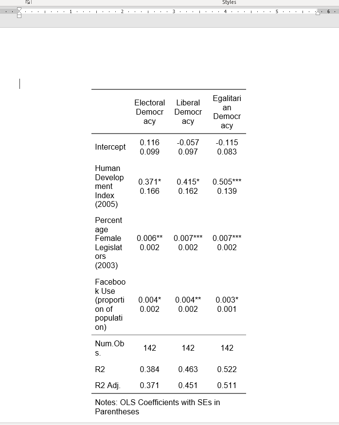
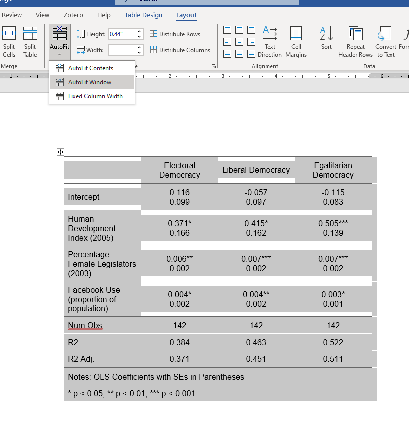

Show the code
# Packages
library(rio)
library(tidyverse)
library(modelsummary)
#Load your data
demdata <- import("data/demdata.rds")- 1
- For importing/exporting data
- 2
- For data manipulation & plotting
- 3
- For creating regression tables
# Packages
library(rio)
library(tidyverse)
library(modelsummary)
#Load your data
demdata <- import("data/demdata.rds")You need to include a formal regression table in your thesis somewhere. This could be the primary method of conveying the results of your model in the main text of your thesis (albeit supplemented with a discussion of predicted values/probabilities in-text or via an additional table/plot). Alternatively, you might include a coefficient plot in the main-text and include the regression table in the appendix. Regardless, you need the table there somewhere.
You learned how to use the modelsummary library (and associated modelsummary() command) to do this for you in R. This chapter focuses on something of an aesthetic pet peeve of mine in the default output of the command and one way to avoid this “issue”.
This example will focus on producing a regression table showing the results from three regression models. The IVs are the same in each model, but each one focuses on a different dependent variable. Here is the syntax needed to perform the regressions and create a regression table.
## Run the models
#DV = electoral democracy index
model1 <- lm(v2x_polyarchy ~ HDI2005 + Women2003 + Facebook, data = demdata)
#DV = liberal democracy index
model2 <- lm(v2x_libdem ~ HDI2005 + Women2003 + Facebook, data = demdata)
#DV = egalitarian democracy index
model3 <- lm(v2x_egaldem ~ HDI2005 + Women2003 + Facebook, data = demdata)
## Create a list
model_list <- list(
"Electoral Democracy" = model1,
"Liberal Democracy" = model2,
"Egalitarian Democracy" = model3
)
##Create a table
modelsummary(model_list,
stars = T,
gof_map = c("nobs", "r.squared", "adj.r.squared"),
coef_rename = c(
"(Intercept)" = "Intercept",
"HDI2005" = "Human Development Index (2005)",
"Women2003" = "Percentage Female Legislators (2003)",
"Facebook" = "Facebook Use (proportion of population)"),
notes = "Notes: OLS Coefficients with SEs in Parentheses")| Electoral Democracy | Liberal Democracy | Egalitarian Democracy | |
|---|---|---|---|
| + p < 0.1, * p < 0.05, ** p < 0.01, *** p < 0.001 | |||
| Notes: OLS Coefficients with SEs in Parentheses | |||
| Intercept | 0.116 | -0.057 | -0.115 |
| (0.099) | (0.097) | (0.083) | |
| Human Development Index (2005) | 0.371* | 0.415* | 0.505*** |
| (0.166) | (0.162) | (0.139) | |
| Percentage Female Legislators (2003) | 0.006** | 0.007*** | 0.007*** |
| (0.002) | (0.002) | (0.002) | |
| Facebook Use (proportion of population) | 0.004* | 0.004** | 0.003* |
| (0.002) | (0.002) | (0.001) | |
| Num.Obs. | 142 | 142 | 142 |
| R2 | 0.384 | 0.463 | 0.522 |
| R2 Adj. | 0.371 | 0.451 | 0.511 |
The table above provides the coefficients from each model and then, underneath them, the coefficient’s standard error. Here is my pet peeve: modelsummary() does not include the coefficient and SE in the same cell of the table, which can lead to situations where you get extra spacing between the coefficient and standard error when the variable label takes up more than one line in its cell. We can see this above with the “Percentage Female Legislators (2003)” and “Facebook Use (proportion of population)” variables.
There is nothing wrong about the output above. I just think it looks kind of ugly. We could perhaps avoid it by specifying a shorter label for the two variables…but that would involve some trial and error to get things right and shortening the label might make it harder to understand the table. But, thankfully, there is another way!
We can avoid the scenario above by changing what modelsummary() puts in the estimate cell. In addition, we’ll have modelsummary() use a different backend for outputting the table to make sure this looks good when we export to Word. Here is some updated syntax:
# The alternative table-formatting package we'll use
library(flextable)
#Revised table syntax
modelsummary(model_list,
estimate = "{estimate}{stars}\n({std.error})",
statistic = NULL,
gof_map = c("nobs", "r.squared", "adj.r.squared"),
coef_rename = c(
"(Intercept)" = "Intercept",
"HDI2005" = "Human Development Index (2005)",
"Women2003" = "Percentage Female Legislators (2003)",
"Facebook" = "Facebook Use (proportion of population)"),
notes = list("Notes: OLS Coefficients with SEs in Parentheses",
"* p < 0.05; ** p < 0.01; *** p < 0.001"),
output = 'flextable')
| Electoral Democracy | Liberal Democracy | Egalitarian Democracy |
|---|---|---|---|
Intercept | 0.116 | -0.057 | -0.115 |
Human Development Index (2005) | 0.371* | 0.415* | 0.505*** |
Percentage Female Legislators (2003) | 0.006** | 0.007*** | 0.007*** |
Facebook Use (proportion of population) | 0.004* | 0.004** | 0.003* |
Num.Obs. | 142 | 142 | 142 |
R2 | 0.384 | 0.463 | 0.522 |
R2 Adj. | 0.371 | 0.451 | 0.511 |
Notes: OLS Coefficients with SEs in Parentheses | |||
* p < 0.05; ** p < 0.01; *** p < 0.001 | |||
Here is what changed:
library(flextable)I first load the flextable package.1 I do this for two reasons: (1) I like the formatting of the table a bit better than the default output from modelsummary and (2) I ran into some issues when exporting the table to Word with the other modifications that using this command avoids.
1 Normally this would be done at the start of the R script with the other packages.
estimate = "{estimate}{stars}\n({std.error})"This is the big change. The default behavior of modelsummary is to present the coefficients from the regression model, which are stored in a column named estimate. In essence, the default option is something like: estimate = {estimate} . Here, we are overriding that default behavior by explicitly specifying what should be in the cell - this is done via the information in the curly brackets. We are telling the command to first plot the coefficient estimate ({estimate}), and then symbols for statistical significance ({stars}). We then tell the command to create a new line in the cell (\n) and to provide the standard errors surrounded by parentheses (({std.error})). This makes sure that everything is presented in the same cell, which will make sure that we do not get any spacing between the coefficient and standard error, regardless of how long the variable labels happen to be.
statistic = NULLThe statistic = option handles whether to plot the standard error or confidence interval for the coefficient (default option = standard error) in a row below the coefficient. We have already printed that statistic via {std.error}, so we tell modelsummary not to print anything here.
notes = list(….)There is a change here: an added line that indicates what the asterisks refer to. We omitted the stars = TRUE option from this syntax because it would end up printing the asterisks next to the standard errors rather than next to the coefficient. However, manually asking for the stars to be printed as above (e.g., {estimate}{stars}) means that modelsummary() won’t automatically print information about what the different asterisks refer to. Hence, this bit of syntax to get around this issue.
output = 'flextable'modelsummary() can use a variety of different table making “back-ends” to create the table; see this page. This tells the command to use the flextable package. This influences the general look of the table as you can probably notice. It also makes sure that the linebreak between the coefficient and standard error is used when we export the table to a Microsoft Word document - other table packages simply printed “\n” rather than creating a new line. The use of this package also has implications for how we export this table to a .docx file, as discussed below.
There is one other step I would take here. It is probably not noticeable above, but the columns listing the coefficients are not centered. We can, of course, export the table to Word and then center it there, but I’m going to handle this all in one go via syntax from the flextable package. In addition, the horizontal line separating “Num.Obs” and the coefficients above it does not always get printed out when exporting to Word when using the syntax above, so I’ll add some syntax to make sure that happens. These steps are optional since you could do them manually later.
# Save the modelsummary results to an object
reg_table <- modelsummary(model_list,
estimate = "{estimate}{stars}\n{std.error}",
statistic = NULL,
gof_map = c("nobs", "r.squared", "adj.r.squared"),
coef_rename = c(
"(Intercept)" = "Intercept",
"HDI2005" = "Human Development Index (2005)",
"Women2003" = "Percentage Female Legislators (2003)",
"Facebook" = "Facebook Use (proportion of population)"),
notes = list("Notes: OLS Coefficients with SEs in Parentheses",
"* p < 0.05; ** p < 0.01; *** p < 0.001"),
output = 'flextable')
# Add some formatting - all of these commands
# come from the flextable package - it needs to be loaded
# before they are used
reg_table <- reg_table |>
hline(i = nrow_part(reg_table) - 3) |>
align(i = 1:nrow_part(reg_table), j = 2:ncol_keys(reg_table),
align = 'center') |>
align(align = 'center', part = 'header')I first create the table and store it as an object (named here as reg_table). Then I use some syntax to format the table. This syntax requires the flextable library to be loaded first:
hline(i = nrow_part(reg_table) - 3) |>This line makes sure there is a horizontal line (hline) between the last standard error and the part of the table with the number of observations and R2 statistics. The nrow_part… stuff handles where the line is drawn. One can specify a specific number here; for instance, i = 5 would tell the command to draw a line after the fifth row. However, that means you have to create the table and count, which is annoying. Instead, this asks the command to calculate the total number of rows in the table (nrow_part(reg_table)) and then draw the line after whatever row = total number - 3. I use 3 here because I have three rows in the goodness of fit area (Num.Obs, R2, and Adj. R2). If I had 4 things in that area, then I’d use 4 instead of 3. This line of syntax can be used in your own examples - you’d just need to update the regression table name (e.g., nrow_part(reg_table) to nrow_part(name of your table).
align(i = 1:nrow_part(reg_table), j = 2:ncol_keys(reg_table), align = 'center')This handles column alignment. The logic here is similar to above: instead of creating the table, counting the number of columns that need centering, and using those specific numbers, I am using some commands in flextable to handle these steps for me. i = 1:nrow_part(): I want each row from row 1 to the final row to be centered. j = 2:ncol_keys(): I want columns 2 through however many columns there are in the table to be centered. This makes sure the column with the variable labels is not centered - just those with the coefficients/standard errors. Again, this syntax can be used freely.
align(align = 'center', part = 'header')This makes sure the column header information (e.g., the model names) is also centered. This could stay the same.
Let’s take a look:
# Let's take a look
reg_table
| Electoral Democracy | Liberal Democracy | Egalitarian Democracy |
|---|---|---|---|
Intercept | 0.116 | -0.057 | -0.115 |
Human Development Index (2005) | 0.371* | 0.415* | 0.505*** |
Percentage Female Legislators (2003) | 0.006** | 0.007*** | 0.007*** |
Facebook Use (proportion of population) | 0.004* | 0.004** | 0.003* |
Num.Obs. | 142 | 142 | 142 |
R2 | 0.384 | 0.463 | 0.522 |
R2 Adj. | 0.371 | 0.451 | 0.511 |
Notes: OLS Coefficients with SEs in Parentheses | |||
* p < 0.05; ** p < 0.01; *** p < 0.001 | |||
You’re likely writing in Word or Google Docs, so you need to export the table to a .docx file so that you can copy and paste the table into your report. We need to use a command from the flextable library to do this since we changed the table-making back-end above.
# How to export to word
save_as_docx(reg_table,
path = "regression_table.docx")All you have to do here is update the name of the table in the command (e.g., from “reg_table” to whatever you have named your table object).
Here is what this looks like in Word:

The one remaining negative: things look a bit “scrunched up”, i.e., the table is not using all available horizontal space in Word. However, this can be fixed in Word by clicking using the “Autofit” option in Word.2
2 I believe this would be handled by the Format \(\rightarrow\) Table \(\rightarrow\) Distribute Columns option in Google Docs. There is an autofit() option in the flextable package that will try and do this for us. We could have added this line |> autofit() as the final line when making the alignment changes above to use it. However, the command is perhaps a bit too aggressive when exporting to Word - instead of taking too little space, it tends to take a little bit too much. We’d then have to manually fix things anyways.
